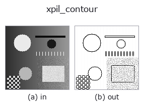

edges op• 資料種類:image → image
• 呼叫:fullseye.apply(img, "xpil_contour", a=0.5, b=0.5)(2-D 的模型是一張圖 + 兩個純量旋鈕 a,b∈[0,1])

*圖為在 128×128 合成輸入上實際執行的輸出。左為輸入，右為輸出。點雲以俯視散點顯示(亮度 = z)，一維序列為折線，體資料為沿 z 的最大值投影，影片為中間影格，複數影像為振幅；無法成像的回傳值直接顯示數值。*
*旋鈕 a 不改變輸出(實測: 0.1 / 0.5 / 0.9 相同)。*
*旋鈕 b 不改變輸出(實測: 0.1 / 0.5 / 0.9 相同)。*
換別的影像(合成場景 / 照片 / 硬幣。上排為輸入，下排為對應輸出。旋鈕取預設):
▸ xpil_contour: 其他輸入影像 (文件網站)
*第 4 欄是彩色 (H,W,3) 輸入。此運算子能正確處理顏色而不跨通道(不把顏色通道當作第三個空間軸摺積)。*
Pillow 的輪廓擷取濾鏡。使用 PIL.ImageFilter.CONTOUR 的固定卷積核，製造出僅在白色背景留下黑色輪廓線的效果（鋼筆畫／線稿風效果）。
a、b 未使用（固定核）。
核為 3x3 的 [-1,-1,-1; -1,8,-1; -1,-1,-1]（scale 1、offset 255），輸出是將 255 + (8*中心 - 8 鄰域之和) 飽和到 0~255 的結果。平坦部為 255（白），比周圍暗的像素變暗，比周圍亮的像素在 255 處飽和。也就是說，階躍的「暗側」會出現 1 像素寬的黑線，亮側維持白色（xpil_find_edges 使用相同的核但 offset 為 0，因此兩側都顯示為亮）。
輸入截斷(clip)到 [0,1]，經 *255 捨去成 8 位元的 L 影像，輸出再用 /255 回到 [0,1]（引入 1/255 的量化）。影像最外周 1 像素 Pillow 不做濾波，依輸入值原樣回傳。0 尺寸的影像會以 ValueError 被拒絕，並 fail-soft 地退回到輸入的截斷版（記錄在台帳中）。它對雜訊也有響應，因此在前級放置 xpil_smooth_more 或 median 可以讓線條變整齊。若要把線條當作區域使用，請先用 invert 讓黑線一側變亮，再接到 threshold。
空影格（實測）：輸入亮度均勻的影像時，無論亮度為何，全部像素都成為前景（1）。過曝、被遮擋或沒有被攝物的影格會被報為「缺陷 100%」，因此應在上游判定是否均勻並加以剔除。
• 範例資料目錄(下載 URL / 授權) —— 2-D 用 skimage.data(BSD/公有領域)加合成圖,3-D 給出真實資料源(Stanford/PDS 等)的下載 URL。
• 運算子來歷與參考文獻 —— 該運算子族所依據的研究/方法出處。
• 演算法的正典(作者、年份)與用途見上面的族使用指南。
下面的程式已確認可以執行(與圖相同的輸入)。在 Studio 說明中，此區塊會變成按鈕，可當場載入並執行。
xpil_contour 0.40 0.50
• gallery2d_edges — py -3.11 examples/gallery2d_edges.py
image 作為輸入)identity · gaussian · mean_box · bilateral · unsharp · median · min_filter · max_filter
edges)sobel_mag · prewitt_mag · roberts_mag · dog · edge_transition_width · grad_dir · log · corner_response
*Provenance: ops.py — 2D 運算子登記表。本條目由 tools/opdocs.py md 自動產生(請勿手動編輯)。*
© 2026 Kazufumi Furuse — Fullseye operator documentation. Licensed under Apache-2.0.